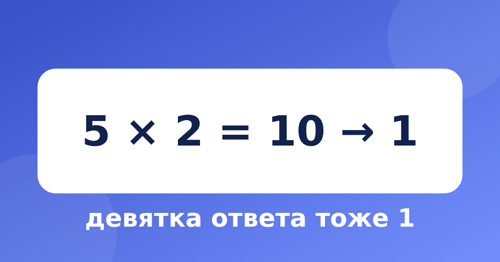

Проверка девяткой: простой способ найти ошибку в умножении

Проверка девяткой — старый способ, который до сих пор помогает в школе. Он не требует калькулятора и занимает полминуты. Правда, у него есть слабое место, о котором стоит знать заранее.
Что такое «девятка» числа
«Девяткой» числа называют то, что останется, если складывать его цифры, пока не получится одна цифра. Возьмём число 4786: 4 + 7 + 8 + 6 = 25, затем 2 + 5 = 7. Значит, девятка числа 4786 равна 7. А девятка числа 18 равна 9: 1 + 8 = 9.
Быстрый способ: вычёркивайте девятки и пары цифр, которые вместе дают 9 (1 и 8, 2 и 7, 3 и 6, 4 и 5). В числе 2736 цифры 2 и 7 дают 9, цифры 3 и 6 тоже дают 9, вычёркиваем всё, и девятка числа равна 9. В числе 4786 пар на 9 нет, поэтому складываем обычным путём и получаем 7.
Как проверить умножение
Проверка состоит из четырёх шагов:
- найдите девятку первого множителя;
- найдите девятку второго множителя;
- перемножьте эти две девятки и найдите девятку произведения;
- сравните с девяткой ответа: они должны совпасть.
Пример: 23 × 47 = 1081. Девятка 23 равна 5 (2 + 3), девятка 47 равна 2 (4 + 7 = 11, 1 + 1 = 2). Перемножим: 5 × 2 = 10, девятка равна 1. Девятка ответа 1081 равна 1 (1 + 0 + 8 + 1 = 10, 1 + 0 = 1). Совпало, ответ похож на верный.
Находим ошибку
Допустим, ребёнок получил 23 × 47 = 1071. Девятка ответа: 1 + 0 + 7 + 1 = 9. Она не совпадает с 1, значит, где-то ошибка. Пересчитываем и находим верный ответ 1081. Так проверка не говорит, где именно ошибка, но показывает, что она есть.
Почему это работает
Девятка числа — это остаток от деления на 9 (если остатка нет, пишем 9). Остаток от произведения всегда равен остатку от произведения остатков. Поэтому у верного ответа девятка обязана совпасть. Объяснение хорошо ложится на простую мысль: десяток — это 9 + 1, сотня — 99 + 1, тысяча — 999 + 1. Девятки мы отбрасываем, а единички складываем, и получается сумма цифр. С этим тесно связан признак делимости на 9.
Чего девятка не замечает
Честная оговорка: проверка находит большинство ошибок, но не все. Она не заметит перестановку цифр в ответе: вместо 1081 можно написать 1801, девятка у обоих чисел равна 1, и проверка «пройдена». Не заметит она и ошибку на 9 (например, 1090 вместо 1081). Поэтому совпадение девяток говорит «скорее всего, верно», а не «точно верно». Если ответ важный, проверьте его вторым способом, например прикинув порядок числа: 23 × 47 примерно равно 20 × 50, то есть 1000.
Тренируемся
Проверьте девяткой и скажите, где ответ верен, а где есть ошибка.
- 34 × 26 = 884 (верно)
- 58 × 41 = 2368 (ошибка)
- 67 × 83 = 5561 (верно)
- 125 × 12 = 1500 (верно)
Типичные ошибки
- Забывают снова взять девятку у произведения девяток: например, 5 × 2 = 10, и нужно взять 1.
- Складывают цифры один раз и не доводят до одной цифры.
- Думают, что совпадение — гарантия, а несовпадение — просто невезение.
Проверка сложения и вычитания
Тот же приём работает и для сложения. Девятка суммы равна девятке от суммы девяток. Пример: 457 + 286 = 743. Девятка 457 равна 7 (4 + 5 + 7 = 16, 1 + 6 = 7), девятка 286 тоже 7 (2 + 8 + 6 = 16). Складываем 7 + 7 = 14, девятка равна 5. Девятка ответа 743 тоже 5 (7 + 4 + 3 = 14, 1 + 4 = 5). Совпало, ответ верный.
Для вычитания проще проверять сложением: если из 743 вычесть 286, получится 457, и сумма 457 + 286 снова даёт 743. Но и девятка здесь пригодится: девятка разности плюс девятка вычитаемого должна дать девятку уменьшаемого.
Игра «Найди ошибку»
Взрослый записывает пять примеров на умножение, в двух из них специально ошибается. Ребёнок проверяет девяткой и находит неверные. Игра отлично приучает проверять работу и не доверять ответу только потому, что он записан. Заодно ребёнок видит, что ошибка бывает у всех, а проверка помогает её найти без страха.
Как использовать
Приучите ребёнка проверять девяткой каждое сложное умножение, например, при работе по умножению в столбик. В тренажёре «Быстрый счёт» есть модуль «Проверка девяткой»: там ребёнок находит девятки чисел и учится замечать ошибки в готовых ответах. Начните с коротких примеров и увеличивайте сложность постепенно: через неделю ребёнок будет проверять умножение почти автоматически.